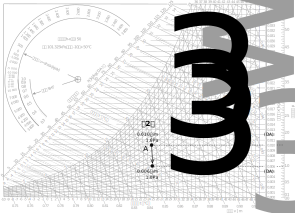
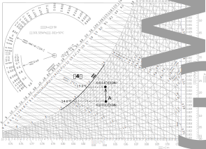

2024年
問題63湿り空気線図上の状態変化に関する次の記述のうち，最も不適当なものはどれか．
（1）湿り空気を加熱すると，相対湿度は低下する．
（2）湿り空気を減湿すると，水蒸気分圧は低下する．
（3）湿り空気を冷却すると，比容積は小さくなる．
（4）湿り空気を加湿すると，露点温度は低下する．
（5）湿り空気を冷却すると，比エンタルピーは低下する．
2024年
問題63正解（4）頻出度AAA
空気は加湿して湿っぽくなると，温度が高くても結露しやすくなる．すなわち，露点温度は高くなる．
湿り空気線図（2024-63-1 図参照）で確認してみると，加湿して絶対湿度が上昇すれば図のA点は上方に移動する．その時露点温度，さらに水蒸気分圧も上昇することが分かる．逆に減湿すれば，A点は下方に移動し，絶対湿度，露点温度，水蒸気分圧ともに低下する．
2024-63-1図湿り空気線図には何が描かれているのか

他の，-(1) ～-(5) の状態点の移動を2024-63-2図〜2024-63-6図に示す．
2024-63-2図-(1) 加熱すると相対湿度は低下する
2024-63-3図-(2) 減湿すると水蒸気分圧は低下する

2024-63-4図-(3)冷却すると比容積は小さくなる
2024-63-5図-(4)加湿すると露点温度は上昇する

2024-63-6図-(5)冷却すると比エンタルピーは低下する